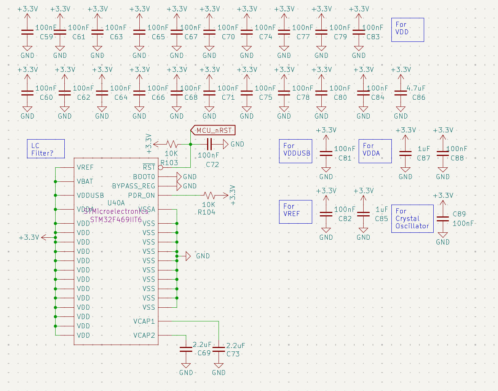
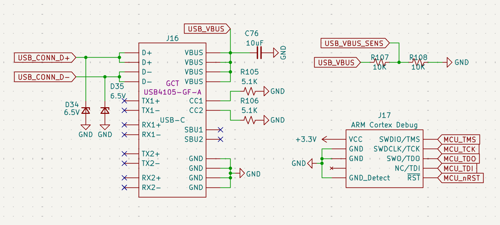
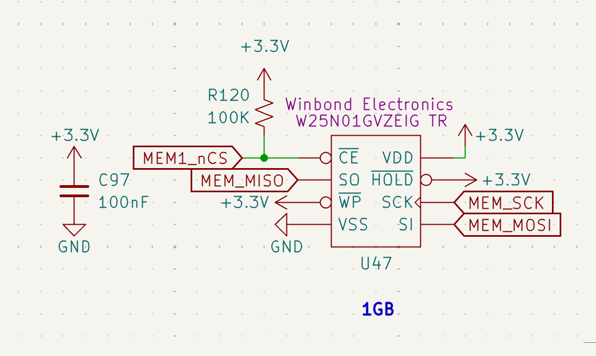

STM32 Processing Core
System Controller (STM32F469IIT6)
The Rocket2 ECU is powered by an (STM32F469IIT6) High-Performance MCU. This controller primarily coordinates sensor data with propulsion actuation logic.
Power Supply & Decoupling Scheme
To ensure logic stability during high-current solenoid switching, the MCU utilizes an extensive decoupling network.

Figure 14: STM32 Power Scheme featuring localized 100nF and bulk 4.7μF capacitors.- Core Stability: Localized 100nF capacitors are placed at every VDD/VSS pair.
- Analog Integrity: Dedicated decoupling for VDDA and VREF ensures high-fidelity ADC readings for propulsion and battery sensing.
- Internal Regulation: 2.2μF low-ESR capacitors (C69, C73) are utilized on the VCAP1/VCAP2 pins to stabilize the internal 1.2V core voltage.
Debug & Programming Interfaces
The board provides two primary methods for firmware deployment and real-time telemetry debugging.

Figure 15: USB-C interface and ARM Cortex 10-pin JTAG/SWD header.SWD (Serial Wire Debug)
The J17 header utilizes the standard ARM Cortex 10-pin (2x5) 1.27mm pitch layout. * Signals: SWDIO, SWCLK, and SWO are routed for real-time instruction tracing. * Reset: The MCU_nRST line is tied to a 100nF capacitor (C72) and a 10kΩ pull-up to prevent accidental resets from EMI.
USB-C Interface
- Model: GCT USB4105-GF-A (16-pin).
- Protection: D34 and D35 (6.5V TVS diodes) protect the high-speed data lines from ESD during handling.
- Sensing: A voltage divider (R107/R108) on the USB_VBUS_SENS line allows the MCU to detect when a ground station is connected via USB.
Peripheral Pin Mapping
The following table outlines the functional mapping of the MCU GPIOs. The detailed ioc file and firmware documentation will be in the rocket2-ecu-firmware repo.
| Peripheral Group | Pin | Signal Name | Function |
|---|---|---|---|
| Actuation | PE13-15, PG0-1 | SOLENOID[0-4]_EN |
PWM/Logic Valve Drive |
| Feedback | PB0-2, PC4-5 | SOLENOID[0-4]_FB |
Analog Current Sensing |
| Instrumentation | PC0-3, PA2 | PT[1-5] |
Pressure Transducer Inputs |
| BMS Status | PD8-12 | REDs_CH[0-4] |
Isolated Charging Status |
| Telemetry | PF0-PF9 | RADIO[0-1] |
Dual-LoRa SPI/GPIO Bus |
| Flight Sensors | PG9-14 | IMU_SPI6 |
High-speed IMU Acquisition |
| Status | PG5 | STATUS_LED |
Heartbeat LED (D36) |
Flash Memory Architecture
The ECU features a dual-chip external storage configuration providing a total of 2GB (1Gb + 1Gb) of non-volatile memory. This high-capacity array is dedicated to high-frequency data logging and state persistence during flight.

Figure 16: Winbond W25N01G High-Performance Serial NAND Flash interface.- Model: Winbond W25N01GVZEIG TR (1G-bit / 128MB per chip).
Hardware Configuration
- Model: Winbond W25N01GVZEIG TR (1G-bit / 128MB per chip).
- Bus Interface: Utilizes a high-speed SPI bus (
MEM_SCK,MEM_MISO,MEM_MOSI). - Active-Low Select: The chip-enable line (MEM_nCS) is tied to a 100kΩ pull-up resistor (R119) to ensure the memory remains deselected during MCU reset, preventing data corruption.
- Write Protection: The WP (Write Protect) and HOLD pins are hardwired to +3.3V to allow continuous high-speed write access during flight.
Data Logging Strategy
- Total Capacity: 2GB.
- Throughput: Optimized for the STM32's maximum SPI clock frequency to ensure that 100Hz+ sensor polling does not experience "blocking" during write cycles.
- Decoupling: Each IC is supported by a 100nF decoupling capacitor (C96) placed immediately adjacent to the VDD pin to maintain signal integrity during high-speed switching.
Fail-Safe Execution
- Default States: All solenoid enable pins are hardware-referenced to GND, ensuring valves remain in a safe/closed state during an MCU power loss or reset event.